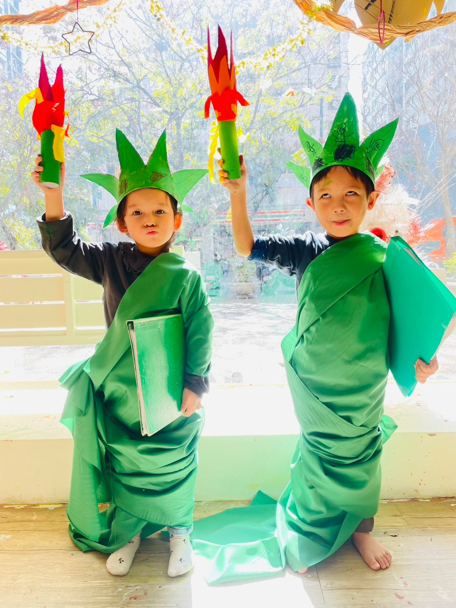
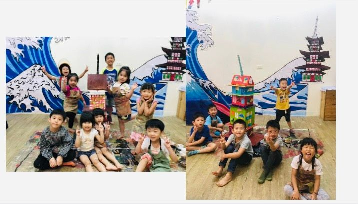

主題介紹
從創作中走進世界，培養孩子看見不同的眼睛
孩子的世界，不該只圍繞在眼前的生活裡。
我們希望孩子從小就能知道：世界很大，有無數不同的文化、生活方式與美感，是值得我們去認識與尊重的。
在「世界各國」主題中，我們每次選擇一個國家切入，帶孩子從文化特色、飲食、建築、服飾、語言到藝術風格，深入感受每個文化背後的獨特精神與價值觀。
我們相信，藝術不只是創作的方式，更是理解世界、學會尊重的途徑。


從創作中走進世界，培養孩子看見不同的眼睛
孩子的世界，不該只圍繞在眼前的生活裡。
我們希望孩子從小就能知道：世界很大，有無數不同的文化、生活方式與美感，是值得我們去認識與尊重的。
在「世界各國」主題中，我們每次選擇一個國家切入，帶孩子從文化特色、飲食、建築、服飾、語言到藝術風格，深入感受每個文化背後的獨特精神與價值觀。
我們相信，藝術不只是創作的方式，更是理解世界、學會尊重的途徑。
這次課程，我們帶孩子走訪了兩個國家：日本與美國。
這不只是「做作品」，而是一場文化浸潤的體驗過程。
孩子在創作中用眼觀察、用手構築、用心感受，慢慢建立起「多元視角」與「文化共感」的能力。
我們相信，藝術教育不該只是技巧與美感的培養，
更應該是開啟孩子對世界的好奇與理解，透過主題式探索，把不同文化的精華轉化為屬於孩子的創作與體驗。
在大綠地，我們陪孩子走得更遠，看得更廣，也畫得更深。
因為學習理解他人，是創造力的起點，也是世界觀的種子。